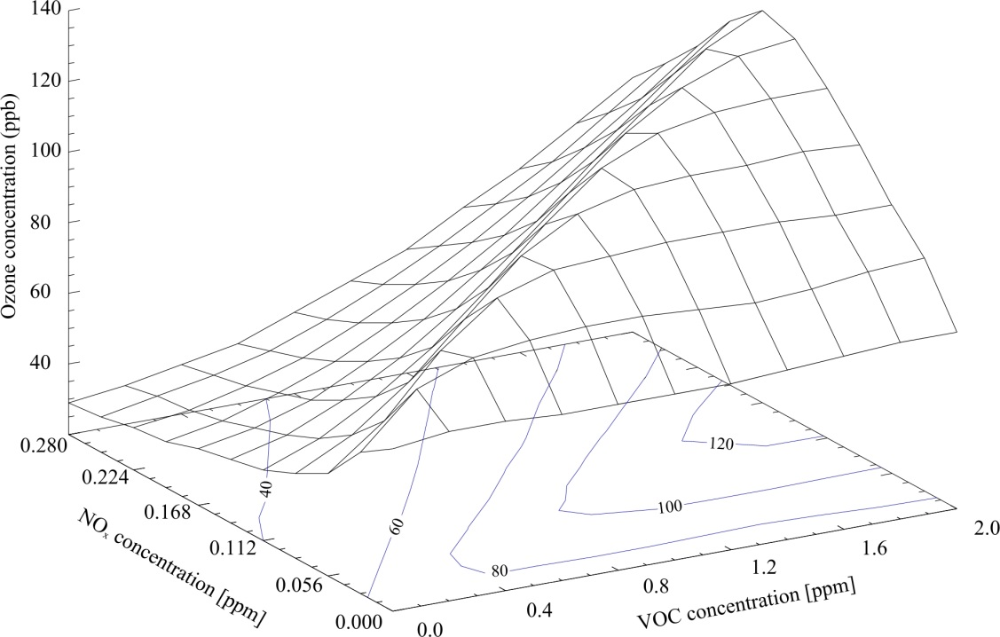

A look at Spatial and Chemical Resolutions in Atmospheric Chemistry Transport Models
By Ben Newsome
bn506@york.ac.uk
Chemistry Transport Models
- Atmospheric Chemistry Transport Models are used to predict the levels of Chemicals and Aerosols in the Atmosphere.
- Levels of Chemical species are calculated using rate equations.
Chemistry Transport Models
- Photolysis, emissions and deposition are modelled using experimental data.
- After a set time-step is complete, the chemicals are transported by wind to adjacent grid boxes.
Spatial Resolution
- Spatial resolution is important in global models for many reasons.
- It allows different areas to be distinguishable.
- It can give more accurate results.
Ozone production
Many species have Non-Linear dependencies.

Scenario
Take for example an area with high pollutants next to an area with low pollutants.

High NOx, Low VOCs.
Low NOx, High VOCs.
Ozone dependency on Resolution
 Forest site
Pollution site
Average
Forest site
Pollution site
Average
Problems with increased resolution
Increased compute time.
More data output.
Higher resolution means smaller time-steps due to transport properties.
Expected Results
Global Ozone Budget should change.
Better more accurate results.
Find out how dependant species are on resolution.
Chemical Resolution
Many current atmospheric chemistry transport models only use a limited number of chemical species in a simulation.
By increasing the number of species, more accurate results should be obtainable.
MCM
The Master Chemical Mechanism
"The Master Chemical Mechanism (MCM) is a near-explicit chemical mechanism which describes the detailed gas-phase chemical processes involved in the tropospheric degradation of a series of primary emitted volatile organic compounds (VOCs). Currently, the degradation of methane and 142 non-methane VOCs is represented."
MCM Resolution
The MCM currently contains:
142 non-methane VOC's.
About 17000 elementary reactions.
6700 primary, secondary and radical species.
MCM Implementation
Parts of the code must be updated to allow for many more species.
Photolysis rates must be linked up with the existing code.
Deposition rates need to be predicted.
Lower Resolution
The MCM scheme could be used as a benchmark.
More computationally efficient schemes can be compared and verified.
Statistical methods can be applied to find which species have the largest and smallest effect.
New chemistry schemes can be generated.
Expected Results
Ideally, very little will change which would mean our current models are accurate.
Might be able to find species or areas that need further research, either experimental or theoretical.

Supervisors: Professor Mathew Evans
& Professor Alastair Lewis